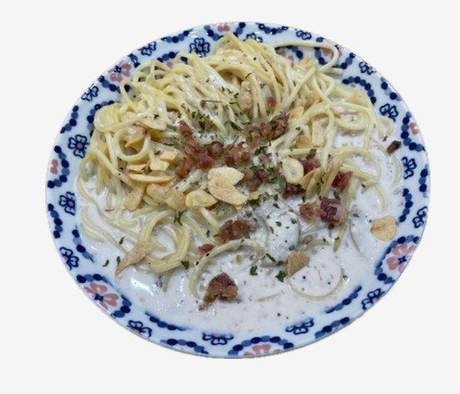
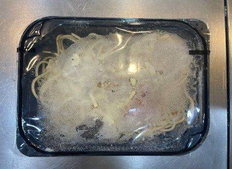
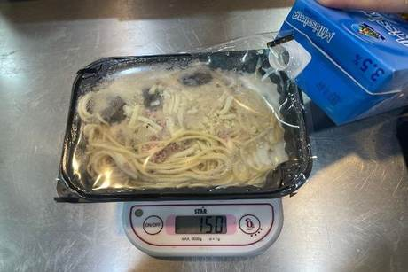
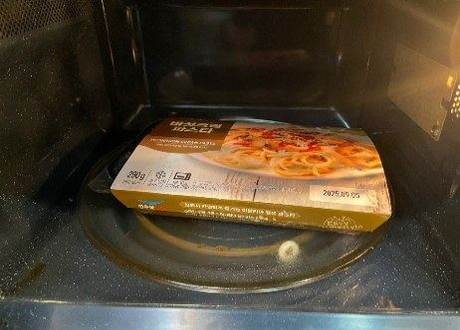
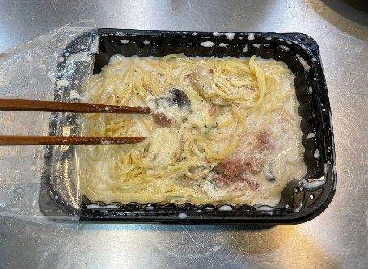
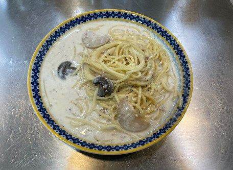
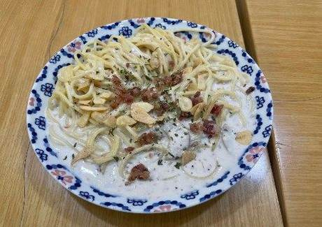
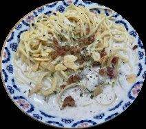

| 메뉴명 | 크림에 빠진 까르보나라 |
|---|
| 판매가격 | 7,900원 |
|---|
| 원재료 | 버섯크림파스타 원팩, 우유, 파슬리, 마늘칩, 베이컨칩 |
|---|
| 사용 부자재 | 덮밥접시 |
|---|
| 메뉴특징 | 부드럽고 고소한 크림소스에 베이컨과 우유가 곁들여져 크리미한 미트스파게티 |
|---|
조리방법

1
냉동 버섯크림파스타의 비닐팩 한쪽을 약간만 뜯는다.
※ 종이팩은 버리지 않고 전자레인지 조리 시 사용하기!

2
뜯은 쪽으로 우유 60g(3Ts)을 부어 넣고 기울여 골고루 퍼지게 한다.
※ 우유가 한쪽에 뭉쳐 있을 경우, 끓어 넘칠 수 있음

3
종이팩을 씌워 전자레인지(700W)에 넣고 6분간 돌린다.
※전자레인지(1,000W) : 5분

4
젓가락을 사용하여 골고루 섞어준다.

5
덮밥접시에 옮겨 담는다.

6
마늘칩 3g, 베이컨칩 5g, 파슬리 약간을 뿌려 완성한다.

7
피클과 함께 제공한다.